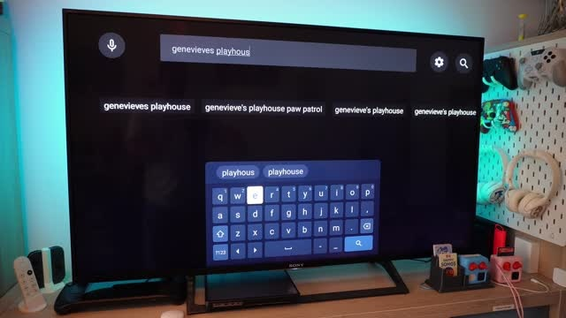
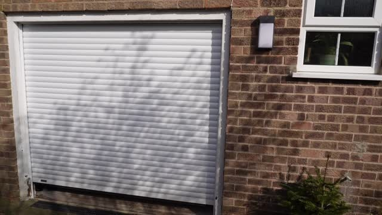
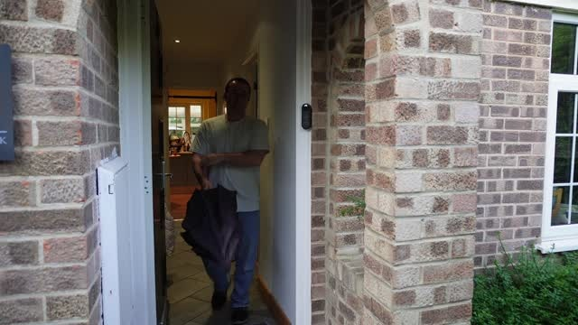
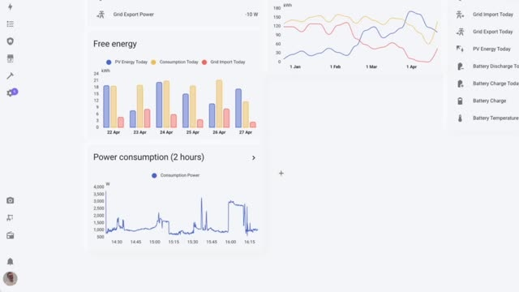

2025 Smart Home dashboard tour
Note: This is generated from a transcript from one of my YouTube videos
I I hunt for inspiration by seeing other people’s dashboards and I think it’s about time that I shed mine. I’m not going to go into implementation details in this video but I hope to give you a few ideas for your own smart home dashboard. I’ve got dashboards set up in two key locations. One is in the hallway and one is on my desk. Both from Philly Kiosk which allows person detection to turn the screen on when someone’s in front of them. The dashboard in the hallway will remain on as well because it knows that somebody is looking at it using face detection. One of my favourite features kicks in when somebody’s at the front door. The dashboard immediately springs into life and it switches from displaying the clock weather card to showing a live camera stream of who’s at the door. This happens on both dashboards so whether I’m near the hallway or whether I’m working on my desk I can see who’s there without having to do anything. The remote control feature of Philly Kiosk is used to do this and it might seem a bit excessive turning the dashboard on when it’s going to turn on anyway when I’m in front of it. But those extra couple of seconds give their time for the camera stream to buffer and display who’s at the door so by the time I get there I can see instantly without having to wait for the video feed to load.
I put a lot of effort into keeping the interface clean and consistent, the temperature controls for example change based on the actual temperature. Above 15 degrees you’ll see the aircon controls. Below 15 degrees the aircon controls disappear and it’s replaced by heating controls and a hot water boost button. What’s important for me is that everything stays in the same place so elements don’t jump around they transform instead. So the clock weather card and the camera stream occupy the exact same amount of space and the aircon and heating controls also occupy the exact same amount of space. The dashboard features a few useful timers that we used daily, there’s a kids TV timer, boost hot water timer and even a potty timer for the little one. I could hide these with conditional cards when they’re 9 use but I actually really like the look of these cards I think they look pretty neat and it also helps keep the dashboard layout quite stable by displaying them all the time. The kids features particularly handy when I tap the kids button, I get an option for different shows, I select one, the automation kicks in and it gives them exactly an hour of TV time.

When the times almost stop the lights behind the TV turn red and the Google Home gives a very second warning before the TV turns off. The kids can also check how much time they’ve got left if they want, they just go stand in front of the dashboard, get turns on and they can see the timer. The hot water boost button is something we use regularly as well during the winter months. So when you press it it boosts the hot water and then the hot water timer as you would expect will start counting down. I also have some automation setup like hot water boosting when I’m training which will kick off the timer as well. Just below that we have a task list powered by Tadewist. We’ve got a custom project called Home in Tadewist where we can add things like take out the bins or recycling which is perfect for those tasks you need to remember when you’re generally in the hallway near the front door or round that area in the house. The garage button is intentionally large and easy to tap, it will also display the current state as well so you can quickly glance at where the garage door has been left open or not. Under the covers, literally it’s using a MiRos garage controller, it’s wired directly into the garage door opener.

So by tapping the button it will ping over a command to the MiRos controller which will tell it to toggle the state between the doors. The person who entered the card shows family members locations as we move between different zones. It’s surprisingly useful. I thought it was kind of a gimmick when I added it but there’s a few scenarios where it’s actually being pretty useful like for example if I go downstairs to make a coffee and I glance at the dashboard on my way and I see my wife sit at the shop, I can just ping her a cheeky message and ask if she doesn’t mind picking me up Cornetto. Given how much I’ll sell the panels cost, I’m slightly obsessed with tracking on her usage. The power flow card shows exactly how electricity is flowing through our house so it can come from the soda panels to the battery, we can see the consumption, we can see what we’re sending back to the grid. We get updates from the inverter every 30 seconds or so so it’s not exactly real time but it’s pretty much good enough. When we leave the house, the alarm is automatically activated and an alarm o-card will appear in the middle of the dashboard. This is one exception where the layout will change on the dashboard and if we’re interacting with the alarm panel then that’s probably our primary concern so I’m not too worried about the layout shifting.
We probably don’t want to be adjusting heating at the same time as trying to disarm the alarm but then once it’s deactivated everything moves back into its original place because the alarm o-card is shown using a conditional card that will only display if the state of the alarm is active. For the occasional day in the UK when it’s actually sunny we have a UV index card which is driven from pilot weather. Normally the UV index is around integer, they seem to return it from the API as two decimal places. Why? Because they are. There’s also a percentage chance of rain cards which will often tell us that it’s likely to rain in the UK as well so we know to grab a body room on the way out the door. One of my favourite little touches is the lunch button so when my wife kindly makes me lunch on the days that I’m working from home she can tap this button and let me know that lunch is ready. My office then transforms into a possibly a little bit over the top disk I made with various light strips doing their thing. It’s very tasteful. While I primarily use the main tab on the hallway dashboard you’ll may have noticed there’s a few other tabs as well and I tend to use those on my phone rather than in the hallway and I’m going to dive into what those do as well.

The light and tab gives me control over every light in the house individually or in groups which is perfect for days when it’s a little bit gloomy and aren’t maybe light up the whole room by turning on all of the lights. Similarly there’s a tab for controlling all of our smart plugs and wall sockets as well. The TV tab tracks viewing time and includes a virtual remote control. This is a life saver when the physical remote inevitably disappears into a toy box or down the back of the sofa and despite having a home our controller seems to go missing all the time and rather than turning the house upside down looking for it we can just use this as a temporary solution. The temperature tab displays readings from every room in the house using gauge cards. I’ve customized the threshold for each room because what’s comfortable for us might be too cold for our bit of dragons for barium for example. So the gauges will visually indicate whether rooms too hot or too cold. The energy tab the little lighting bolt is quite satisfying for my inner data nerd. It shows our current power consumption and export to the grid in near real time as mentioned. We get about 30 seconds delay on it.

The difference here and the power cards is that I can tap through for a history of it as well. There’s also a two hour consumption history that is pretty good for identifying any unexpected energy spikes. If I notice there’s been a spike in energy I can think back about half an hour what was I doing and what might of course this spike and I can start to drill into diagnostics a bit there. I particularly love the free energy graph that combines solar generation and battery use. This shows how much we’re saving day to day and it’s quite satisfying to look at. The weekly power graph breaks this down even further and there’s detailed readings from our inverteif we want to get into the nitty gritty details easily. The cost tab marked with a pound symbol shows our gas and electricity cost month by month highlighting the difference between summer and winter bills. It also serves as quite a nice baseline so we can potentially see how energy tariffs have changed over time as well. The same data is available in a few different time spans so we’ve got a six month breakdown and also a weekly breakdown as well. The humidity tab pulls data from our temperature sensors in key rooms.
There’s nothing particularly fancy here. The car of and so on off sensors that we use both have temperature and relative humidity sensors on them. I have a bunch of automations that will control humidity but I like to keep an eye on them as well from time to time and easily get access to history stats for that room. Finally the plant tab shows visually how our house plants are doing. I’ve set up bluetooth sensors that sit in the plant pots and they connect directly to the home assistant and then ping us alerts when the plants need watering. It’s especially useful for tracking metrics like daily lighting to go across seasons and things like that and if I know that I need to water a plant I can go and look at the soil conductivity and say hey do I need to feed this plant as well. Now you have a fairly comprehensive tour of my home dashboard setup. I was originally quite skeptical that I would use the dashboard in the hallway where I could just pull out my phone and have a look but I think I’d actually really miss it if it wasn’t there. I think I would generally miss it and I think the people in my family rid as well. If you want to build something similar check out the description for links, the cards and components I’ve mentioned.
Don’t forget to like and subscribe if you want to see more smart home projects and until next time happy automating.
Links:
Video
You can watch the full video on YouTube here:
Transcript
Support me to keep making videos

If you like the work I’m doing, please drop a like on the video, or consider subscribing to the channel.
In case you’re in a particularly generous mood, you can fund my next cup of coffee over on Ko-Fi
The links from some of my videos are affiliate links, which means I get a small kickback at no extra cost to you. It just means that the affiliate knows the traffic came from me.